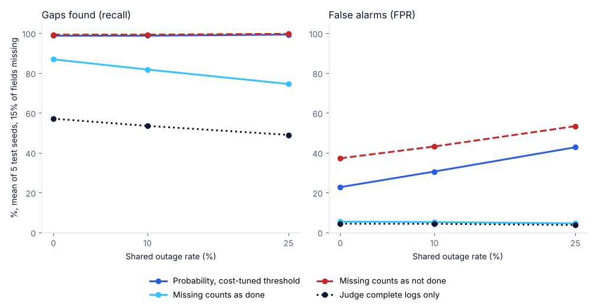

Experiment · Agentic AI · Synthetic benchmark
When AI agents' logs went missing together, every audit rule either missed gaps or raised false alarms
When two agents lose their logs at the same moment, an auditor cannot tell a skipped duty from a blackout. The honest answer is "send it for review", not a verdict.
By Muzammal Hussain · 25 October 2026 · 6 min read
In my earlier simulations, agents that failed for the same reason made team voting useless. This experiment looks at the audit side of the same problem. When several AI agents share a task, an auditor reads their logs to check whether one of them skipped a required step. But a missing log entry is not proof that the step was skipped. I built a small simulator to measure what happens when logs go missing one field at a time, and when two agents lose their logs together because they share one log store.
Key findings
- Judging only complete logs missed about half the gaps: with 15% of fields missing, this rule found 57.1% of skipped duties with no shared outages and 49.0% when 25% of episodes had one. It almost never raised a false alarm (4.4% or less).
- Counting missing logs as failures flagged the innocent: it found 99% of gaps, but flagged 37.2% of clean episodes, rising to 53.4% at 25% outages.
- Counting missing logs as "done" hid gaps behind outages: its recall fell from 86.9% to 74.5% as outages rose, because a duty skipped by an agent whose log was lost looked complete.
- A probability rule tuned for the costs had the lowest weighted cost in all 9 settings, but only by sending every outage episode for review: all 318 clean episodes with an outage in the 15% and 25% setting were flagged.
What I did
I wrote a Python simulator (standard library only) with three agent roles: a planner, an executor and a verifier. In 35% of episodes exactly one role skips its required duty; that is the responsibility gap the auditor has to find. Each role writes 3 log fields about its duty, and each field is correct 90% of the time. Then evidence goes missing in two ways:
- Independent omission: each field is lost on its own, with probability 5%, 15% or 30%.
- Shared outage: the log store used by the executor and the verifier fails, and all six of their fields are lost together, in 0%, 10% or 25% of episodes.
I compared four auditor rules:
- Judge complete logs only: a role is judged only when all three of its fields are present.
- Missing counts as done: a lost field is read as "duty done".
- Missing counts as not done: a lost field is read as "duty not done".
- Probability: the chance that some role skipped its duty, using only the fields that are present. The threshold was chosen on training seeds 11, 22 and 33, with a missed gap costing 5 and a false alarm costing 1.
Each setting was tested on five seeds that were not used for tuning (44, 55, 66, 77 and 88), with 400 episodes each. The run takes about a second on a laptop and gives the same files every time.
Results

The table gives the same setting. Recall is the share of real gaps found; FPR is the share of clean episodes flagged. Weighted cost is the benchmark's own score (5 per missed gap, 1 per false alarm, over 400 episodes), not money.
| Shared outage | Rule | Recall | FPR | Weighted cost |
|---|---|---|---|---|
| 0% | Probability, threshold 0.1 | 0.988 | 0.228 | 66.2 |
| 0% | Judge complete logs only | 0.571 | 0.044 | 328.0 |
| 0% | Missing counts as done | 0.869 | 0.054 | 110.6 |
| 0% | Missing counts as not done | 0.993 | 0.372 | 98.8 |
| 10% | Probability, threshold 0.1 | 0.988 | 0.306 | 86.0 |
| 10% | Judge complete logs only | 0.535 | 0.043 | 354.8 |
| 10% | Missing counts as done | 0.818 | 0.052 | 148.0 |
| 10% | Missing counts as not done | 0.993 | 0.432 | 113.8 |
| 25% | Probability, threshold 0.1 | 0.993 | 0.428 | 112.8 |
| 25% | Judge complete logs only | 0.490 | 0.038 | 386.4 |
| 25% | Missing counts as done | 0.745 | 0.046 | 199.4 |
| 25% | Missing counts as not done | 0.997 | 0.534 | 136.6 |
Results varied between the five seeds by up to about 10 points; for example, the complete-logs rule at 25% outages ranged from 44.2% to 54.3% recall. The 5% and 30% missing-field settings, in the repository, follow the same pattern, and the gap between the rules grows as more fields go missing.
Why the best rule flagged every outage
When the shared store fails, the auditor sees only the planner's log. The executor or the verifier might have skipped its duty, and nothing in the record can say which. The probability rule gives these episodes at least a 26% chance of a gap, which is above its tuned threshold of 0.1, so every one is flagged. With a missed gap costing five times a false alarm, that is the cheapest choice. It also flagged 23% of clean episodes without an outage, because at 15% missing fields many logs are thin.
So the result is not "use this threshold". It is that no rule can recover evidence that was never written. A rule that gives a verdict on a blacked-out episode either hides gaps (missing counts as done) or blames agents that did their job (missing counts as not done). What an audit system can do is say plainly that the record is incomplete and send those episodes to a person, and avoid putting the logs of several agents in one place that can fail at once.
Limitations
This is a synthetic benchmark, not a study of real agents or real logs. The field accuracy (90%), the gap rate (35%) and the 5-to-1 cost are my choices. The probability rule is given the simulator's true accuracy and gap rate, which a real auditor would have to estimate. Only one kind of shared outage (two of three agents) is simulated, and logs go missing for reasons that do not depend on whether the duty was done. An earlier version of this benchmark (v0.1.0) used one score for every rule; it was rebuilt before these results.
What I will test next
- An auditor that has to estimate log accuracy and the gap rate from data, instead of being given them.
- Real traces: the tool-call logs from my local-model experiments (qwen2.5:3b and llama3.1:8b through Ollama), with fields removed on purpose, to see whether the same trade-off appears.
Version 0.2.0. The simulator, 10 tests, the 18,000-episode synthetic test dataset with its data card, per-seed metrics for all 36 setting and rule combinations, and the chart script are in the repository. No real users, systems or language models were involved.